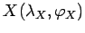
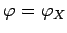
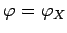
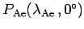

Inhalt Index DeskTop Bronstein

 Geometrie Sphärische Trigonometrie Berechnung sphärischer Dreiecke Loxodrome
Geometrie Sphärische Trigonometrie Berechnung sphärischer Dreiecke Loxodrome


Der Schnittpunkt  einer Loxodrome mit dem Kurswinkel  durch den Punkt
durch den Punkt  mit dem Breitenkreis  berechnet sich gemäß (3.246b) zu
mit dem Breitenkreis  berechnet sich gemäß (3.246b) zu
Mit (3.250) läßt sich speziell der Äquatorschnittpunkt  berechnen:
Hinweis: Unter Umständen ist gemäß (3.231) eine Rückversetzung der Winkel erforderlich.